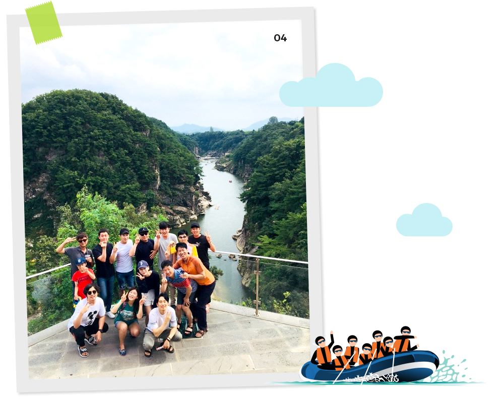

와 제 롤모델이 잡스에요!!! 아이폰 첫 출시되고 나서부터 계속 아이폰 쓰고 있는데 잡스가 너무 그리워요ㅠㅠ 지금은 돈만 벌려고 하는 것 같아서 디자인 발전도 없고ㅠㅠ와 제 롤모델이 잡스에요!!! 아이폰 첫 출시되고 나서부터 계속 아이폰 쓰고 있는데 잡스가 너무 그리워요ㅠㅠ 지금은 돈만 벌려고 하는 것 같아서 디자인 발전도 없고ㅠㅠ와 제 롤모델이 잡스에요!!! 아이폰 첫 출시되고 나서부터 계속 아이폰 쓰고 있는데 잡스가 너무 그리워요ㅠㅠ 지금은 돈만 벌려고 하는 것 같아서 디자인 발전도 없고ㅠㅠ와 제 롤모델이 잡스에요!!! 아이폰 첫 출시되고 나서부터 계속 아이폰 쓰고 있는데 잡스가 너무 그리워요ㅠㅠ 지금은 돈만 벌려고 하는 것 같아서 디자인 발전도 없고ㅠㅠ와 제 롤모델이 잡스에요!!! 아이폰 첫 출시되고 나서부터 계속 아이폰 쓰고 있는데 잡스가 너무 그리워요ㅠㅠ 지금은 돈만 벌려고 하는 것 같아서 디자인 발전도 없고ㅠㅠ
HMM 인사이드
산악회-마라톤회 합동 정모
여름의 끝자락,
함께 추억 새기기
함께 추억 새기기

초록이 깊어가는 여름의 끝자락, 현대상선의 사내 동호회인 산악회와 마라톤회가 합동 정모를 가졌다.
산악회 주최로 열린 이번 합동 정모는 강원도 철원 한탄강에서 레저스포츠 래프팅을 즐기며 자연을
만끽하는 프로그램으로 진행되었다. 하루의 짧은 여정으로 여름의 끝을 만끽하고 돌아온 현상인들의
하루를 김현미 대리가 소개한다.
글·사진
김현미 대리(항만계약관리팀)
사내 동호회인 산악회와 마라톤회가 함께 래프팅을 가기로 결정한 다음 날, 태풍 솔릭이 한반도를 관통할 것이라는 일기예보가 들려왔다. 우리가 떠나는 전날까지만 태풍의 영향권에 속한다고 했지만, 혹 당일에도 비가 올까 초조하기만 했다. 그런데 이게 웬일인가. 떠나기 전날 오전 솔릭의 진로가 동해안 쪽으로 급격하게 꺾였다는 기쁜 소식이 들려왔다. 우리의 간절한 마음을 하늘이 알아주기라도 한걸까. 래프팅을 하기로 한 날, 보트에 같이 탑승하는 강사님이 감탄하며 말했다. “와, 올 여름 중 제일 좋은 날 오셨네요. 올해 비가 안 와서 진짜 고생했거든요. 어제 태풍이 지나가서 지금 수량이 아주 딱 좋습니다. 재미있게 한번 타 봅시다!”
강원도 평강에서 시작해 철원과 연천을 지나 휴전선을 가로질러 임진강과 합류하는 한탄강. 민족 분단의 상징인 휴전선을 가로질러 흐르기에 이름조차 한탄일까? 그런 의미로 생각하다 보면 ‘한탄’이라는 이름과 묘하게 어울리는 것 같지만, 사실 ‘한탄(漢灘)’은 ‘한여울’, 즉 큰 여울을 뜻하는 말이다. 한탄강의 풍경은 분단의 장벽과 연결된 인식을 잠시 잊으라고 이야기하는 듯 수려한 풍광을 뽐냈다. 27만년 전 용암이 흘러내려 만들어진 강의 양 옆의 주상절리는 여름의 끝에 다다른 푸르름을 뽐내 감탄사를 연발하게 했다. 이 아름다운 풍광 속에서 여름의 끝자락을 만끽하며 래프팅을 할 수 있다는 사실 자체만으로도 정말 행복했다.
01래프팅을 시작하기 전 단체사진 한 컷!
02다이빙으로 유명한 바위가 나오자 너도나도 올라가 뛰어들었다
03고석정 전망대에 올라 현상인 가족의 생일을 축하하기도 했다
산악회 총무로서 정모를 진행할 때마다 공통적으로 느끼는 한 가지가 있다. 산행을 시작하기 전과 후의 분위기가 극명하게 달라진다는 점이다. 회원들은 각자 소속된 팀도 다르고 직급도 다양해서 처음 만나 선뜻 이야기할 만한 공통의 화제거리를 찾지 못한다. 하지만 숨이 턱 막히는 깔딱고개를 밀어주고 끌어주며 함께 지나고, 전망대에서 ‘저기가 어디네 여기는 어디네’ 하면서 시선을 공유하고, 정상에 도착해 막걸리를 한 잔씩 마시고 나면 그 짧았던 두세 시간이 서로 공감할 수 있는 화제거리가 되어 분위기가 어느새 왁자지껄해진다.
이번 래프팅 체험도 그러했다. 다른 동호회 회원들이 모이는 합동 정모에 가족들까지 초청했기에 이들의 첫 만남 역시 조용하기만 했다. 철원으로 향하는 버스 안에서 들리는 소리는 쌔근쌔근 잠든 숨소리 뿐이었다. 그러나 래프팅 장소에 도착해 서로 구명 조끼의 안전 띠를 채워주고, 무거운 보트를 함께 나르고, 강사의 구령에 맞춰 노를 저어 급물살을 헤쳐나가면서 분위기가 반전되었다. 래프팅을 하던 중 다이빙으로 유명한 바위가 나오자 너도나도 올라가 물에 첨벙첨벙 뛰어들면서 분위기가 더욱 고조되었고, 이 모습은 마치 삼천궁녀가 낙화암에서 줄줄이 물로 뛰어드는 것만 같았다.
이렇게 시간을 공유하고 나면 백발백중 집에 돌아가는 시간이 늦어지기 마련이다. 이제 막 친해진 그 분위기에 헤어지는 게 아쉽기 때문이다. 때마침 누군가 한탄강이 한눈에 내려다 보이는 전망대에 들렀다 가면 어떻겠냐고 제안했다. 편의점 커피를 손에 들고 한탄강이 보이는 팔각정에 둘러앉아 도란도란 이야기를 나누고 바람도 쐤다.
어느새 우리는 그냥 회사 동료가 아닌 ‘함께 여행을 다녀온 그런 깊은 사이’가 되었다.

04헤어짐이 아쉬워 들른 한탄강 전망대 위에서
-
최고예요
322
-
좋아요
322
-
슬퍼요
322
-
그저 그래요
322
-
화나요
322